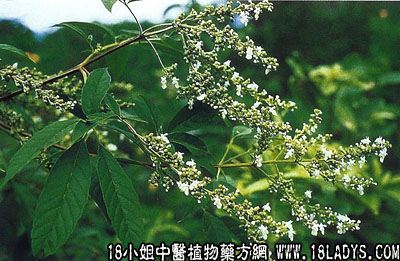

古籍名：牡荆《名医别录》。
别名：布荆叶（又名布凉）、蚊子叶。
植物名：黄荆。
生长环境：本品为灌木或小乔木。生长于村庄旁或公路附近空旷地上。
分布：我国东南部和西南部均产之，广东各地皆有。
入药部分：叶。
采集期：不拘时，夏季收成，初夏最好。
自采地点：小山岗。
性味：性平、味甘苦、气香。
功能：祛风、止痛、止水泻、杀蚊蝇。
主治、用量和用法：1、感冒风热：干叶5钱至1两，清水煎服；2、热疟；3、暑热：均用法同上；4、犬咬伤：生叶捣烂，加黄糖外敷。
验方：（治感冒发热方）五指柑叶5钱、路边菊花5钱、如意花头5钱、黄花母5钱、金展银盘5钱、清水四碗，煎成一碗，热服。
（方解）本方以五指柑叶、黄花母疏封解表；路边菊止头痛而治咳嗽；如意花头、金展银盘清热，合为治上焦封热之剂。
（方歌）感冒发热五指柑，路边菊合如意头，金盏银盘黄花母，热解封疏疾不留。
参考资料：《广东省卫生厅防疫局介绍）以布荆5份、茶麦一份、加水6份，煎一小时去渣，用以杀蚊蝇及农业害虫、蛀心虫有效。
《广东中医》（1960.8.第5节）用七叶蚊惊树（即五指柑）根，配猪骨粉治痫症14例，获得全愈12例，有效率92.8%。
五指柑煎水，可洗皮肤痕痒，民间用作熏蚊；浸水可杀孑虫；亦可作茶叶（取陈旧者）代用品。